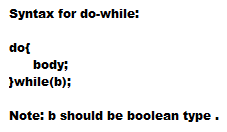
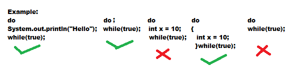

DO-WHILE
If we went to execute loop body at least once then we should go for do-while loop .

Curly braces are optional and without curly braces only one statement is allowed between do and while, which not be declarative statement .
